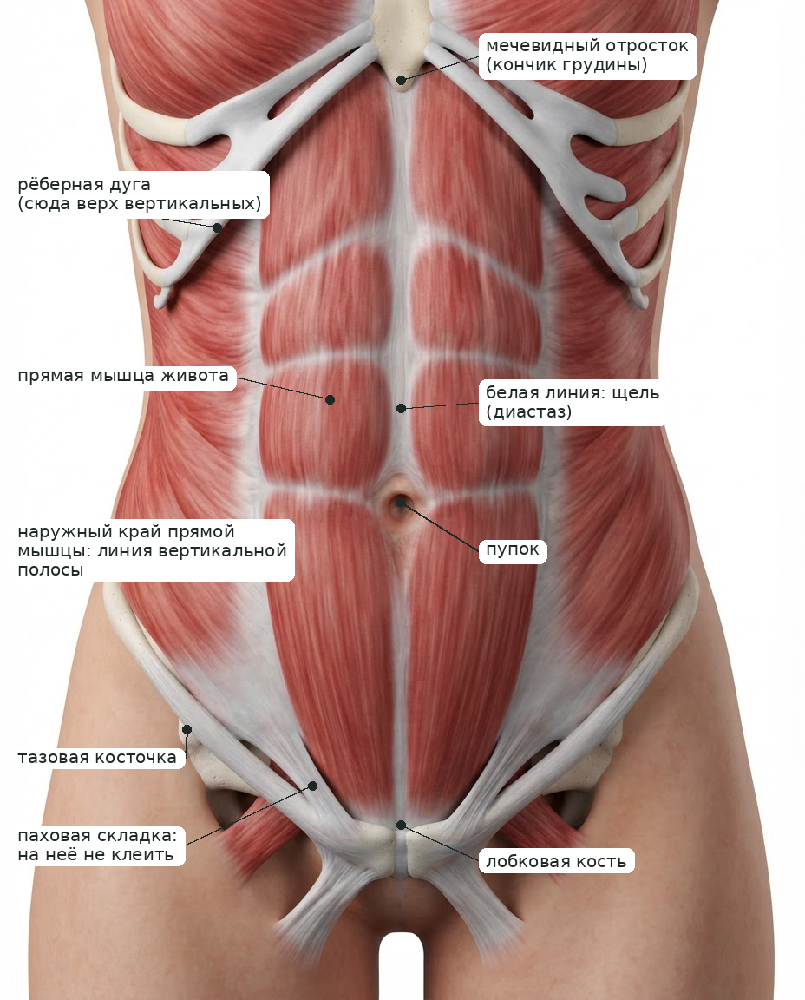
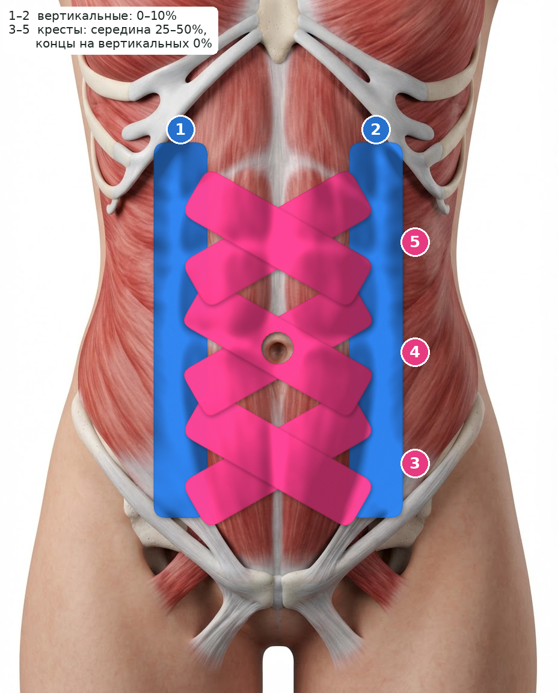
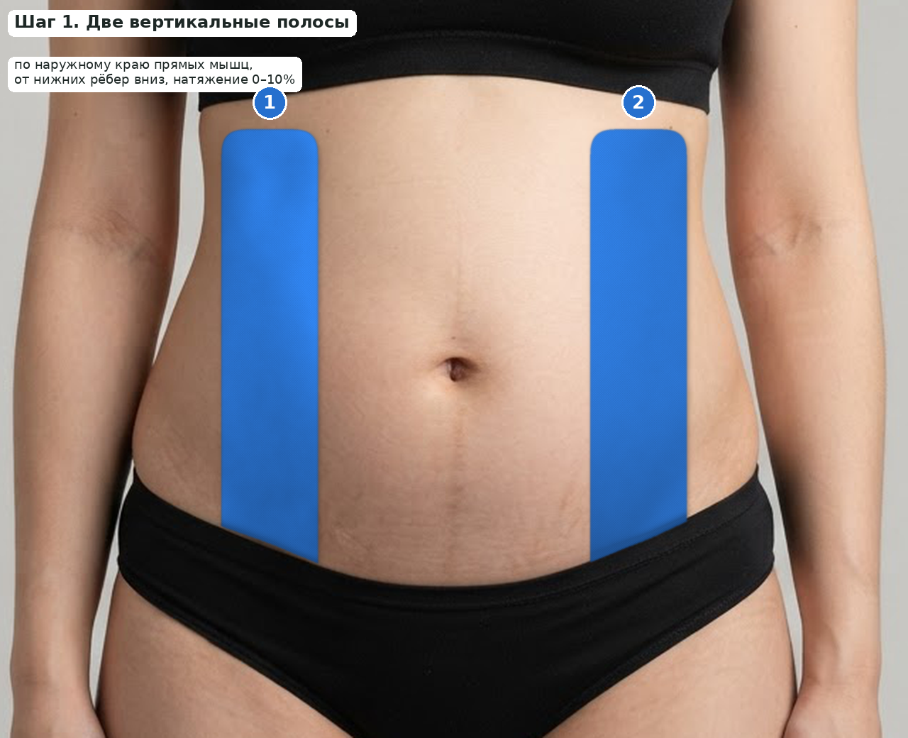
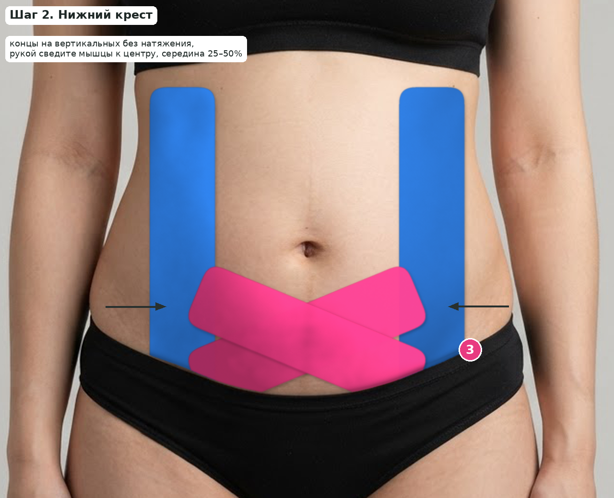
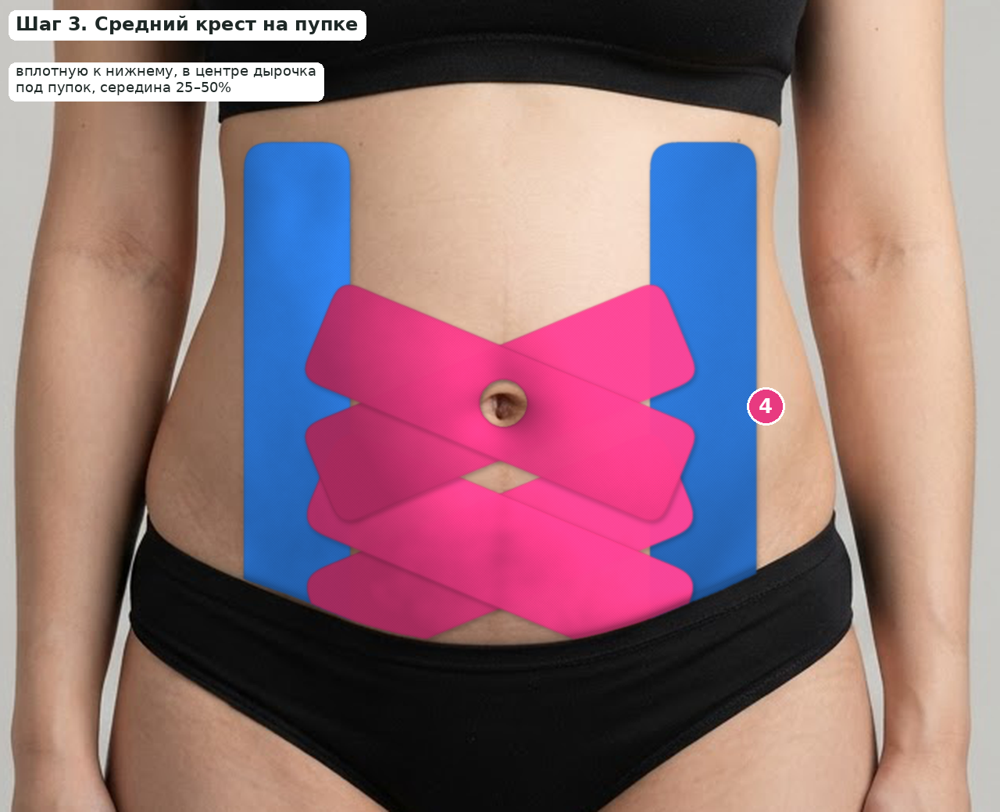
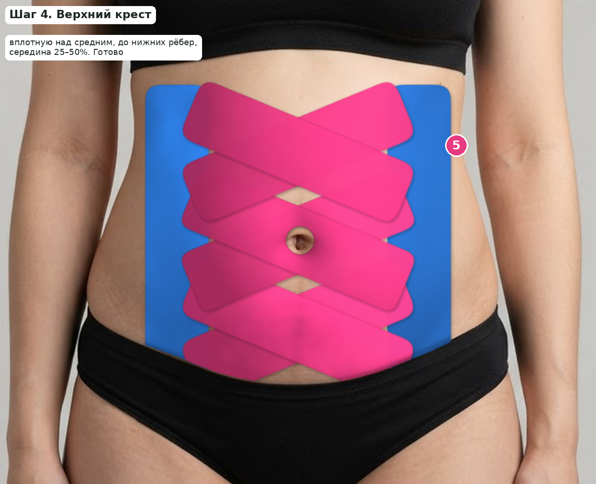

Шнуровка от диастаза
Тейп на живот, который держит щель между прямыми мышцами по всей длине: две вертикальные полосы по краям мышц и три креста между ними, как шнуровка на корсете. Лента 5 см, кресты удобнее клеит помощник.
1–2 вертикальные, основа, 0–10%3–5 кресты, середина 25–50%, концы 0%
Где клеить


- Ориентируйтесь по костям, а не по пупку: кончик грудины, рёберная дуга, тазовые косточки, лобковая кость.
- Найти край мышцы: лёжа приподнимите голову, как в начале скручивания. Напрягутся два валика, их наружный край и есть линия вертикальной полосы.
- Кресты ложатся между вертикальными, их концы клеятся прямо на синие полосы. Средний крест с дырочкой под пупок.
По шагам




Стрелки на шаге 2: ладонями сведите мышцы к центру, пока клеите середину креста. Нижние концы заходят под резинку белья только на фото, на деле они кончаются за 2 пальца до паховой складки.
Как клеить
Что нужно2 полосы по 25–30 см и 6 полос по 15–18 см. Уголки скруглить, в 2 полосах среднего креста вырезать дырочку под пупок.
ПозаЛёжа на спине, колени согнуты, стопы на полу. Клеить на выдохе, живот мягко втянут.
НатяжениеВертикальные 0–10%. Кресты: середина 25–50%, концы без натяжения.
Носить3–5 дней, затем перерыв 1–2 дня.
- 1–2. Вертикальные. По наружному краю каждой прямой мышцы, от нижних рёбер вниз. Нижний конец за 2 пальца до паховой складки, внутри от тазовой косточки. Кладите почти без натяжения: это основа для крестов.
- 3. Нижний крест. Первая полоса наискосок от правой вертикальной к левой. Конец на вертикальной без натяжения, ладонями сведите мышцы к центру, середину натяните на 25–50%, второй конец на другой вертикальной без натяжения. Вторая полоса креста наискосок в другую сторону.
- 4. Средний крест на уровне пупка, вплотную к нижнему, дырочкой на пупок.
- 5. Верхний крест вплотную над средним, не выше рёберной дуги.
- Растереть всю шнуровку ладонью 20 секунд, чтобы клей прогрелся. Через 30–60 минут можно в душ.
Что делает шнуровка
- Кресты мягко стягивают края прямых мышц к середине и разгружают белую линию, пока она восстанавливается.
- Лента напоминает телу держать живот, и вы реже его «отпускаете».
- Щель сводят упражнения на глубокие мышцы живота и тазовое дно. Тейп помогает им, но один не закрывает диастаз.
Когда не клеить и к врачу
- Бугорок или шишка у пупка или по белой линии при напряжении, щель шире 2–3 пальцев: сначала к гинекологу или физиотерапевту (возможна грыжа).
- Свежий шов после кесарева, ранки, сыпь, раздражение кожи, аллергия на пластырь (тест: кусочек на сутки).
- Зуд, жжение, пузыри: снять сразу. Покраснение дольше часа после снятия: пропустить 2–3 дня.
- Боль в животе, температура, сильное вздутие: к врачу, тейп тут не поможет.
Сводка
| Полоса | Длина | Где | Натяжение |
|---|---|---|---|
| 1–2 вертикальные | 25–30 см | наружный край прямых мышц, от рёбер вниз | 0–10% |
| 3 нижний крест | 2 × 15–18 см | низ живота, между вертикальными | середина 25–50% |
| 4 средний крест | 2 × 15–18 см | на пупке, с дырочкой | середина 25–50% |
| 5 верхний крест | 2 × 15–18 см | над пупком, до рёбер | середина 25–50% |
Носить 3–5 дней, перерыв 1–2 дня. Снимать медленно, по росту волос, можно смочить маслом.